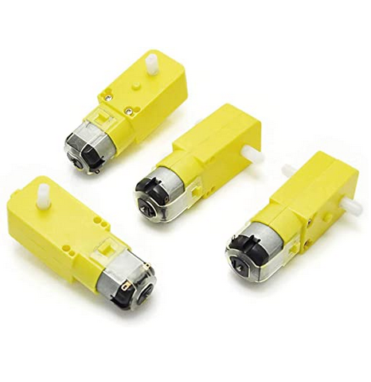
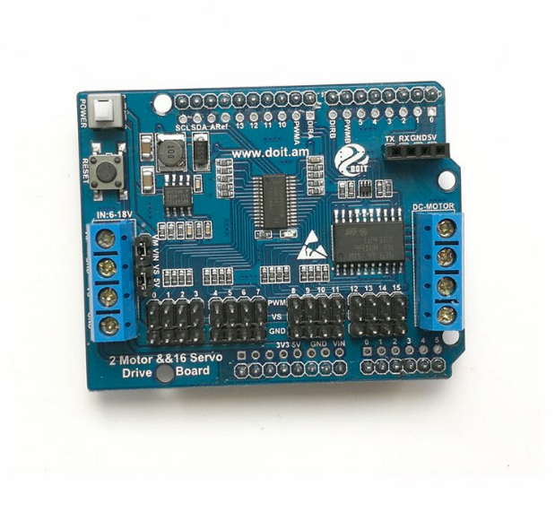
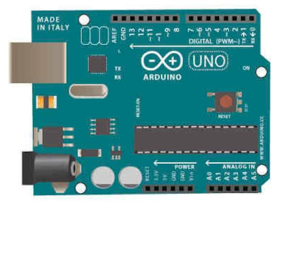
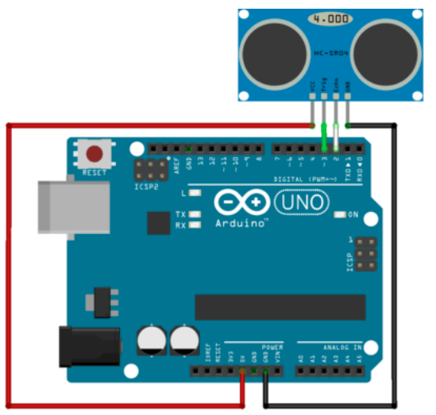
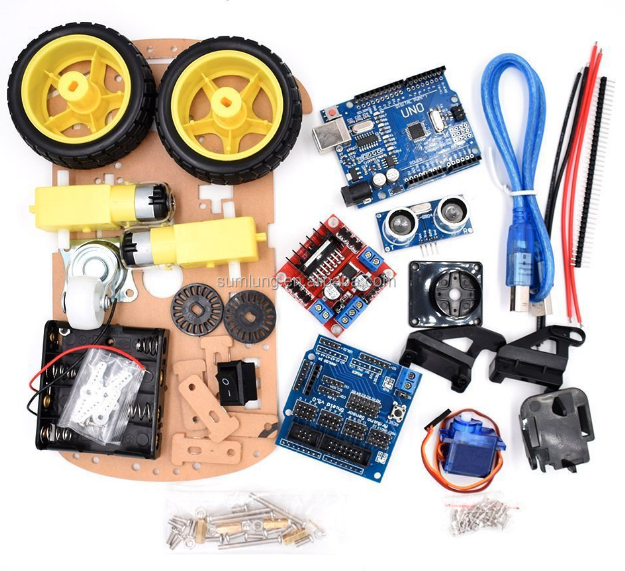

En primer lugar debemos investigar y saber de que se encarga cada componente del chasis del coche. Sin ese tipo de información es imposible llegar a realizar una buena programación.

Motores
Es un dispositivo electromecánico que te permite reducir la velocidad a un alto par. Estos 4 motores son los que van a permitir al coche arrancar y moverse.

Motor de 2 canales y placa de protección servo de 16 canales
Esta placa se conecta sobre la placa Arduino, en ella conectamos los motores además del servo.

Placa arduino
Es el cerebro del proyecto, la placa la conectamos al ordenador y le introducimos el código para que envíe las órdenes a todos los componentes.

Sensor HC-SR04
El HC-SR04 es un sensor ultrasónico que mide la distancia con ondas de ultrasonido. Va conectado a la placa arduino y es el que vamos a utilizar para que detecte los objetos.
SEGUIMIENTO
Estrategia
La estrategia que tenemos pensada seguir es montar el coche lo antes posible y comprobar su funcionalidad, una vez montado y comprobado que los motores y los sensores funcionan correctamente, empezar a introducir los códigos al coche e ir modificandolos para conseguir el objetivo de nuestro proyecto.
Definición de las tareas
Lo primero a realizar como hemos dicho en el otro apartado es buscar información de cada uno de los componentes del chasis del coche, una vez sepamos de la función de cada uno de estos tenemos que empezar con el montaje, fijándonos en un video de youtube y procurando montarlo igual sin ningún error ya que con un simple cable mal conectado el coche dejará de funcionar.
Una vez montado, se tiene que programar y para ello tenemos que entender algo de programación y de cómo funciona el programa Arduino IDE, para ello hemos buscado diferentes códigos y que estén explicados bloque por bloque para saber qué función realiza cada uno.
Por lo tanto debemos introducir el código más completo y que más se asemeje al objetivo que estamos buscando y desde el código base ir cambiándolo hasta que nos parezca correcto.
Todo esto en el caso de que no nos de nada ningún problema, para ello hemos ido haciendo las siguientes pruebas paso por paso y solucionando cada uno de los problemas que nos a ido surgiendo.

Prueba 1
Después de terminar con todo el montaje del coche, lo primero que hicimos fue comprobar si el coche se encendía (batería, sensores, placa), también le metimos un código desde el Arduino IDE para comprobar si el coche arrancaba.
Cuando lo terminamos de montar vimos que todo se encendía correctamente, pero los motores no arrancaban, entonces le metimos el código a la placa Arduino, pero daba un error y no dejaba subir el código.
Prueba 2
Como el coche no arrancaba tuvimos que desmontarlo todo otra vez para comprobar que estaba bien montado y conectado correctamente. También hicimos una prueba de los motores por si acaso para comprobar si ese era el problema.
Una vez comprobado todo lo anterior y demostrado que los motores funcionaban correctamente lo volvimos a montar pero el coche seguía sin funcionar.
Sacamos la conclusión de que el problema era de la placa ya que no nos dejaba meter el código, por lo tanto era evidente que el coche no arrancará.
Prueba 3
Lo último que hicimos después de buscar información por internet fue actualizar la placa arduino, ya que no estaba en su última versión y no tenía los drivers necesarios. Volvimos a meter un código de prueba en la placa y ya lo aceptaba.
Entonces ya metimos los códigos buenos, el del radar para que detectara los objetos que tenía a menos de 1 metro, el del bluetooth para que dejara conectar el coche con el móvil y el de movimiento para que dejara controlarlo desde la aplicación del móvil.
Entonces ya fue cuando el coche arrancaba y cumplía con todas sus funciones.